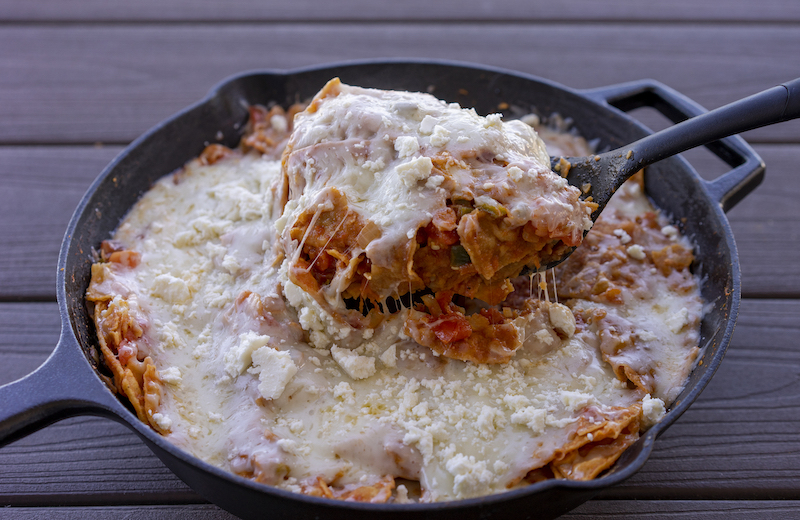

Chilaquiles Rojos

Description
These are not your average chilaquiles. These are your Sunday morning, sleep in until noon wear pajamas all day red chilaquiles.
Eat them with fried eggs, eat them with fried potatoes, a bloody mary, you get the point.
This is the breakfast I grew up on except of course my mother usually made them for me, and still does whenever I come home to visit.
Enjoy!
Ingredients
- 1 tbsp oil
- 1 white onion, diced
- 3 jalapeños, minced
- 2 garlic cloves, minced
- 4 roma tomatoes
- 1 can of tomato puree
- 1 tsp tomato paste
- 1/2 lb shredded Queso Oaxaca (or mozzarella)
- Queso fresco
- Tortilla chips
- Salt and pepper to taste
Steps
- Add some oil to cast iron skillet or saute pan on medium high heat.
- Dice onion and sauté in skillet for a few minutes until translucent.
- Add jalapeños and garlic to skillet and lower heat to medium.
- After another few minutes, dice tomatoes and add to skillet.
- Cook for about 10 minutes until tomatoes begin to release their juices and start bubbling.
- Add the can of tomato puree, adding a little water to the empty can to get the last remaining
puree out into the skillet. Add the tomato paste, three five finger pinches of salt and stir until incorporated.
- Bring to a boil then turn back down to low, cover and simmer for another 10 minutes.
- Uncover, fill the skillet with tortilla chips and toss until coated.
- Add layer of cheese over the top until everything is covered. Cover again and allow cheese to melt completely.
- Remove from heat and allow to cool until the cheese sets.
- Top with some crumbled queso fresco. You can also use cotija or leave out the extra cheese.
- This dish also goes well with a fried egg on top!